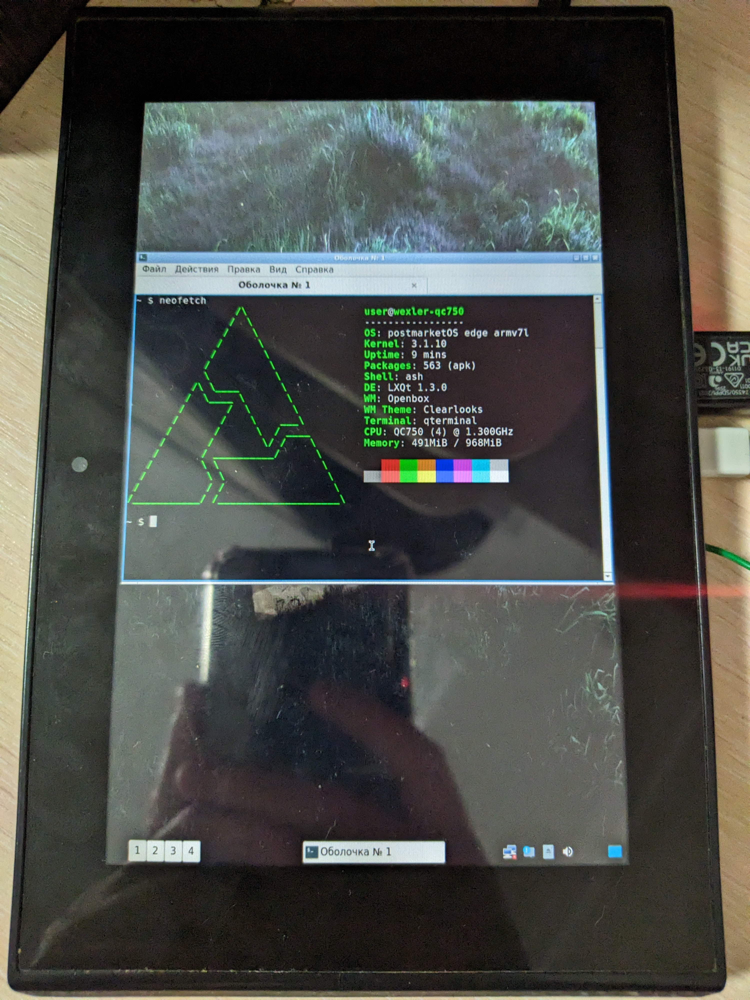

WEXLER Tab 7t (wexler-qc750)
|
 Booted tablet with lxqt | |
| Manufacturer | WEXLER |
|---|---|
| Name | Tab 7t |
| Codename | wexler-qc750 |
| Released | 2012 |
| Category | testing |
| Original software | Android |
| Original version | 4.2.2 |
| postmarketOS kernel | downstream 3.1.10, mainline 6.4.0 |
| Hardware | |
| Chipset | Nvidia Tegra 3 (T30L) |
| CPU | Quad-core 1.3 GHz Cortex-A9 |
| GPU | NVIDIA ULP GeForce GPU 12 cores |
| Display | 1280x800 IPS LCD |
| Storage | 8, 16, 32 GB |
| Memory | 1 GB DDR3L |
| Architecture | armv7 |
| Type | tablet |
| Unixbench Whet/Dhry score | 1161.4 |
{kind=link}
| USB Networking |
Works
|
|---|---|
| Flashing |
Works
|
| Touchscreen |
Works
|
| Display |
Works
|
| WiFi | |
| FDE | |
| Mainline |
Works
|
| Battery | |
| 3D Acceleration | |
| Audio | |
| Bluetooth | |
| Camera | |
| GPS | |
| Mobile data | |
| SMS | |
| Calls | |
| USB OTG |
Works
|
| NFC | |
| Accelerometer | |
|---|---|
| Magnetometer | |
| Ambient Light | |
| Proximity | |
| Hall Effect | |
| Barometer | |
| Power Sensor | |
| Camera Flash |
Unavailable
|
|---|---|
| Keyboard |
Unavailable
|
| Touchpad |
Unavailable
|
| USB-A |
Works
|
| HDMI/DP | |
| Ir TX |
Unavailable
|
| Ir RX |
Unavailable
|
| Stylus |
Unavailable
|
| Haptics |
Unavailable
|
| Ethernet |
Unavailable
|
| FOSS bootloader |
Works
|
| Primary Bootloader |
Works
|
|---|---|
| Secondary Bootloader |
Broken
|
| Mainline |
Works
|
| Internal Storage |
Works
|
| SD card |
Works
|
| USB Host |
Works
|
| USB Peripheral |
Works
|
| Display |
Works
|
| Keyboard |
Unavailable
|
| Buttons |
Works
|
Notes
- Mainline in progress now.
- Device SoC is similar to SoC in Google Nexus 7 2012 and Google Nexus 7 2012 GSM
- OTG available - full support, connect and disconnect, at least USB keyboard-mouse and USB drives
partially (full USB port, working only when device connected before booting) - Battery charges (at least not discharges while OS work). Somehow reports status only in xfce4.
- Device have 3G modem (not working?)
- MiniHDMI port available (not working?)
- I accidentally broke my touchscreen connector on the motherboard, so I'm working with wireless USB keyboard-mouse now
Tested environments
- xfce4: works better than other environments, but still have some issues
- lxqt: works fine, can't manage to reboot or power off in UI, doing through terminal
- console: works with connected wireless USB keyboard-mouse
- fbkeyboard: works, can't test touchscreen
Any other UIs is not working, or I can't get them to work for now.
How to enter flash mode
fastboot: Press Volume Up + Power keys, with Volume Down move selection to Fastboot Protocol, then choose it by pressing Volume Up.
APX: Press Volume Up + Power keys, with Volume Down move selection to Forced Recovery, then choose it by pressing Volume Up.
Installation
| For now this section refers to downstream kernel installation. |
We can install to sdcard now, so fastboot restrictions is now in the past.
-
pmbootstrap initwith vendor wexler and codename qc750 pmbootstrap install --sdcard /dev/sda-
pmbootstrap flasher flash_kernelPartition limit: 8 MB
Legacy information, about flashing directly to the device:
pmbootstrap flasher flash_rootfs
It's possible to flash to userdata, but fastboot limit size of images is still to figure out (possibly 800 MB).
pmbootstrap flasher flash_rootfs --partition userdatafastboot format system
Mainline status
| This part is in development. |
Tablet boots mainline kernel 6.4.0-rc6 https://github.com/grate-driver/linux, adaptation is going on in forked tree https://github.com/DX37/linux/tree/wexler-qc750
| Status | Hardware | Info |
|---|---|---|
| P | Booting | Mainline kernel boots with U-Boot, so it needs to be placed in pmOS_boot partition on microSD card. Can be in theory loaded from eMMC boot partition, but grate kernel is bigger, than old downstream kernel, and surpasses 8 Mb partition size. Needs testing. |
| P | Bootloader | Open source bootloader U-Boot is available as alternative for vendor bootloader and can replace it, but starts only sometimes. |
| Y | Panel | Chunghwa CLAA070WP03XG LVDS simple panel. |
| Y | Backlight | Simple pwm-backlight GPIO backlight. Working and even manageable in xfce4. |
| P | miniHDMI output | Maximum output is 1920x1080. Needs manual detection by opening Display settings (in xfce4). No audio. |
| ? | Touchscreen | Novatek NT11003 with nt1103-ts driver. Worked in downstream kernel, but can't test it in mainline since I broke touchscreen connector on the motherboard. |
| Y | microUSB & Full size USB | Works. USB storage and USB peripherals are working (using USB keyboard-mouse kit instead of touchscreen). |
| Y | Internal memory | eMMC 8 Gb, but can be 16 or even 32 Gb. |
| ? | GPS | Not tested yet. |
| ? | WiFi | Not tested yet, possibly wl12xx driver. |
| ? | Bluetooth | SD8787? Not tested yet. |
| P | GPIO keys | There is 3 keys on GPIO: Power, Volume up, Volume down. Power key responding only to holding for force poweroff. |
| ? | GPIO led | There's only one GPIO led for charging state. Not tested yet, possibly works only on low-level hardware. |
| Y | Battery | TI BQ27500, works. |
| ? | Charger | TI BQ24160, not tested yet. |
| Y | PMIC | Maxim MAX77663 PMIC. |
| P | Sound | TI TLV320AIC3206, headphones and speakers sound is working, can't test microphone (guess still need UCM for that and speakers/headphones switching). |
| ? | Thermal sensor | NCT1008 ON Semiconductor, not tested yet. |
| P | Orientation sensors | Magnetometer Asahi-Kasei AK8975 and accelerometer Kionix KXTF9 seems to be working. Gyroscope Invensense MPU3050 does not. |
| ? | Light sensor | ISL29018? ISL29028? Not tested yet. |
| ? | Front camera | GC0308, not tested yet. |
| ? | Rear camera | T8EV5, not tested yet. |
| ? | Modem | usi_3g? Not tested yet. |
| P | Graphics support | 2D acceleration works with xf86-video-opentegra (Nvidia_Tegra#GPU). |
U-Boot
| This part is in development. |
Current U-Boot status (in development by Clamor):
| Status | Feature | Info |
|---|---|---|
| P | Primary bootloader | U-Boot can be loaded with patched nvflash (tegra30_debrick) through APX (Forced Recovery), but after flashing starting only sometimes.
Created bricksafe.img successfully restores vendor bootloader (and original ROM flash, of course). |
| ? | Secondary bootloader | U-Boot chainloading from both /boot and /recovery partitions not tested. |
| Y | Panel | LVDS simple panel works. |
| Y | MicroSD | Fully functional and detectable. Can be used as boot source. Can be mounted from U-Boot. |
| Y | eMMC | Fully functional and detectable. Can be used as boot source. Can be mounted from U-Boot. |
| Y | Boot kernel | Yes, and can be highly adjusted with extlinux.conf. |
| ? | Boot menu | Not tested. |
| ? | Power management | Not tested. |
| P | Fastboot | Not fully tested. |
| ? | Bricksafe hook (legacy) | Not tested. |
| ? | Boot Android | Not tested and possibly not working. |
| ? | Self update | Not tested. |
Contributors
Maintainer(s)
Users owning this device
- DragonX256 (Notes: Tegra 3 tablet, trying to mainline)
See also
- This SoC has mainline support
- Using this old 3.1.10 kernel, built with gcc6: https://github.com/DmitryADP/morpheus_kernel_wexler_qc750
- Device related build files
- Possibly full device related source files
- Some nice photos on Reddit
- Photos on Reddit about getting UART debug ready
- pmaports!1742 Initial merge request
- Device package
- Kernel package